notes/PanGu-pi Nonlinearity Compensation.md
# PanGu-π: Enhancing Language Model Architectures via Nonlinearity Compensation
- 阅读日期：2026-04-08
- 阅读状态：已读
- 标签：#paper #llm #architecture #nonlinearity #imported
- 相关方向：Transformer 架构改造、特征坍塌、领域大模型
- 阅读目的：评估“非线性补偿”是否能在不显著增参下提升效率与精度
1. 论文信息
- 题目：PanGu-π: Enhancing Language Model Architectures via Nonlinearity Compensation
- 链接：https://arxiv.org/abs/2312.17276
- 作者：Yunhe Wang, Hanting Chen, Yehui Tang, Tianyu Guo, Kai Han, Ying Nie, Xutao Wang, Hailin Hu, Zheyuan Bai, Yun Wang, Fangcheng Liu, Zhicheng Liu, Jianyuan Guo, Sinan Zeng, Yinchen Zhang, Qinghua Xu, Qun Liu, Jun Yao, Chao Xu, Dacheng Tao
- 单位：华为诺亚方舟实验室等（以论文首页为准）
- 会议 / 期刊 / 年份：arXiv / 2023-12-27
- 关键词（3~8个）：feature collapse, rank collapse, nonlinearity compensation, augmented shortcut, cascaded activation, domain LLM
- 论文一句话主题：通过 MSA 增强捷径与 FFN 级联激活两类补偿机制，缓解特征坍塌并提升 LLM 效率与效果。
2. 先看结论（适合快速回顾）
- 这篇论文主要解决什么问题：大模型扩参路线成本高，且 Transformer 深层存在特征/秩坍塌影响表达能力。
- 提出的核心方法是什么：PanGu-π（augmented shortcut + cascaded informed activation）。
- 最终最重要的结果是什么：在相近规模下实现更好的效率-精度平衡；7B 版本推理速度约 +10%（源笔记记录）。
- 我现在是否值得深入读：值得
- 原因：兼顾理论分析、架构设计和通用+领域落地验证。
3. 问题定义
3.1 研究问题
- 论文研究的核心问题：如何在有限增量计算下增强 LLM 非线性与表达能力。
- 输入是什么：标准 Transformer 解码器架构与训练语料。
- 输出是什么：改进后的 PanGu-π 模型（1B/7B）与领域模型 YunShan。
- 优化目标是什么：缓解特征坍塌、提升任务性能与推理效率。
- 任务设定 / 威胁模型 / 前提假设：在相同训练策略下比较架构改动收益。
3.2 为什么重要
- 这个问题为什么值得做：仅依赖 scaling law 的边际成本越来越高。
- 现实应用价值：更适合金融/法律等高价值场景的可部署模型路线。
- 学术上的意义：把“非线性增强”系统引入 LLM 架构设计。
3.3 难点
- 难点 1：特征相似性上升与秩坍塌会削弱深层表达能力。
- 难点 2：增强非线性容易引入计算负担和训练不稳定。
- 难点 3：通用任务有效不代表领域任务同样收益。
4. 论文方法
4.1 方法总览
- 方法名称：PanGu-π
- 一句话概括方法：在 MSA 与 FFN 双路径进行非线性补偿，抑制特征坍塌。
- 方法整体流程（按步骤写 1/2/3/4）： 1. 分析 Transformer 特征坍塌与秩退化。 2. 在 MSA 引入增强捷径（augmented shortcut）。 3. 在 FFN 引入级联信息激活函数。 4. 组合成 PanGu-π 并在 1B/7B 与领域模型上验证。
4.2 核心设计
每个设计都尽量回答：做了什么、为什么这么设计、解决了哪个难点
设计 1
- 做了什么：在 MSA 主分支并行增强捷径，保持特征多样性。
- 为什么这样设计：降低自注意力堆叠导致的低秩收缩与过平滑。
- 解决的难点：难点 1。
- 关键公式 / 目标函数：特征多样性度量
d_M(·)（源笔记记录）。 - 证据位置：论文第 3 节理论分析 + 对应结构图。
设计 2
- 做了什么：在 FFN 引入级联激活与可学习仿射变换。
- 为什么这样设计：在低额外开销下增强非线性表达能力。
- 解决的难点：难点 2。
- 关键公式 / 目标函数：级联激活函数族（见原文与源笔记图示）。
- 证据位置：方法章节与消融实验。
设计 3
- 做了什么：将两模块组合形成 PanGu-π，训练 1B/7B，并扩展到 YunShan 领域模型。
- 为什么这样设计：验证规模与场景迁移下的稳定收益。
- 解决的难点：难点 3。
- 关键公式 / 目标函数：架构组合消融（单模块 vs 双模块）。
- 证据位置：主实验与领域实验部分。
4.3 训练 / 推理细节
- 训练阶段做了什么：在相同数据/训练策略下与同规模主流模型对比。
- 推理阶段做了什么：重点报告精度与速度权衡。
- 损失函数组成：沿用语言模型标准训练目标（源笔记未给出新损失项）。
- 关键超参数：与基线保持一致策略，核心变量是架构模块开关。
- 复杂度 / 额外开销：模块引入计算增量可控，换取更优效率-性能。
4.4 特征坍塌与补偿机制图（原始内容迁移）
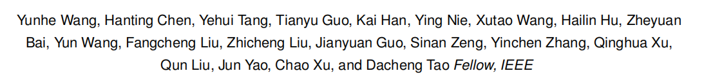

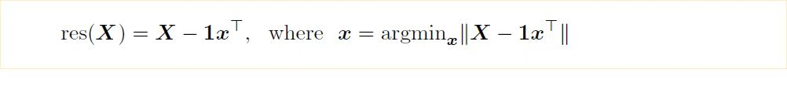
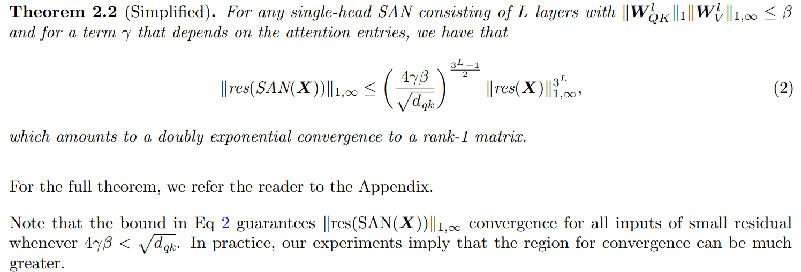
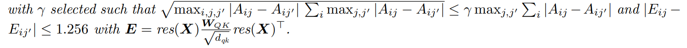
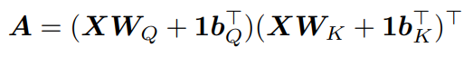
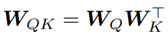
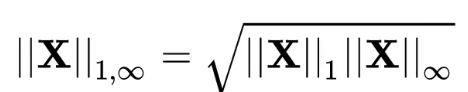
4.5 MSA/FFN 模块图（原始内容迁移）
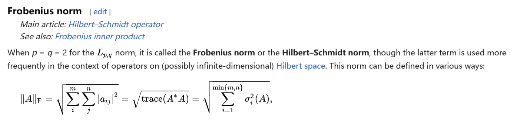
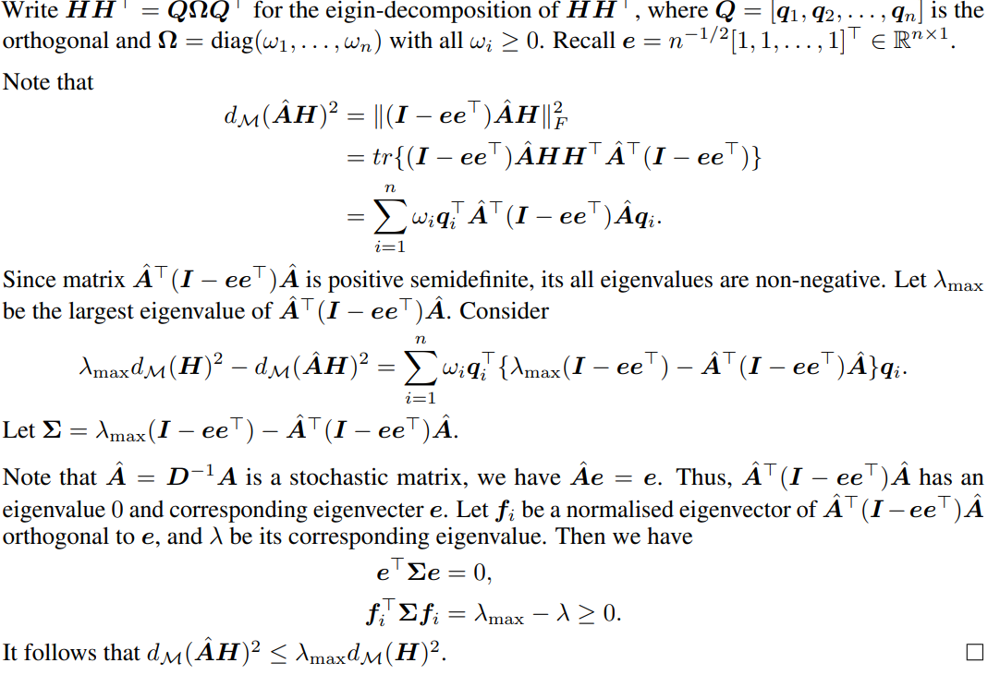
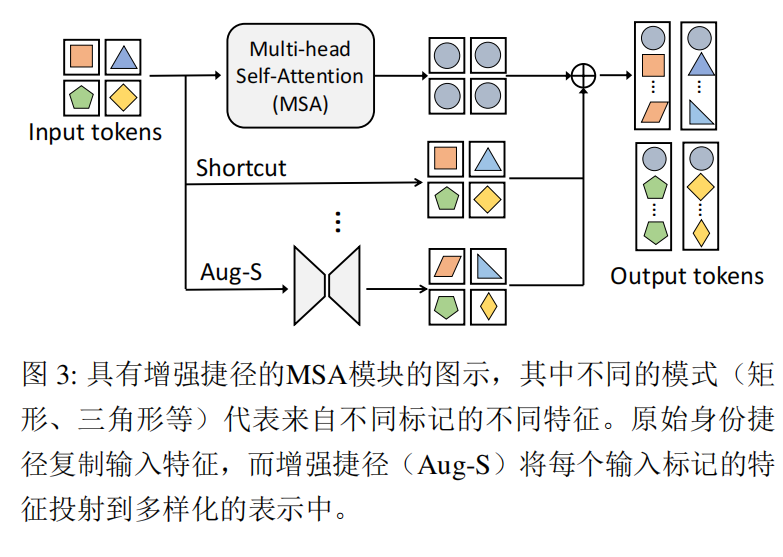
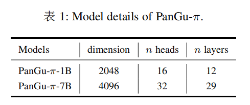
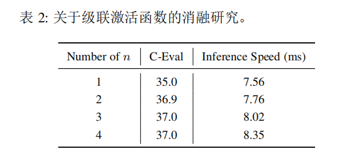
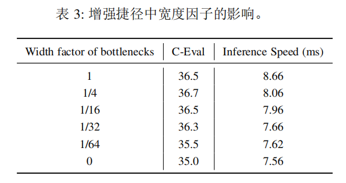
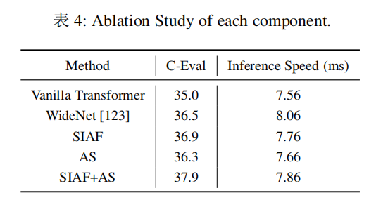
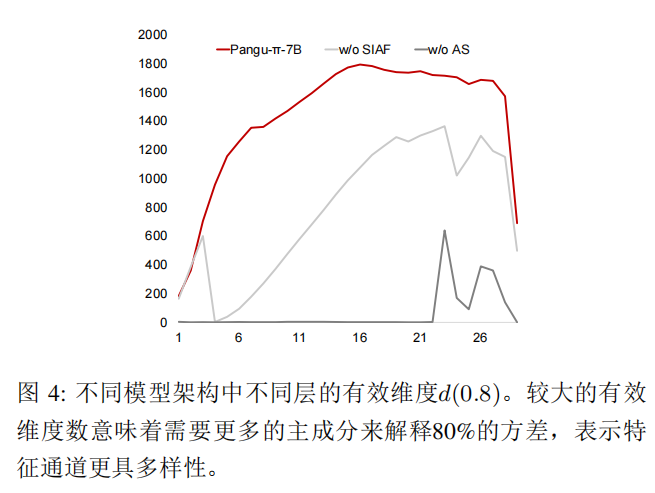
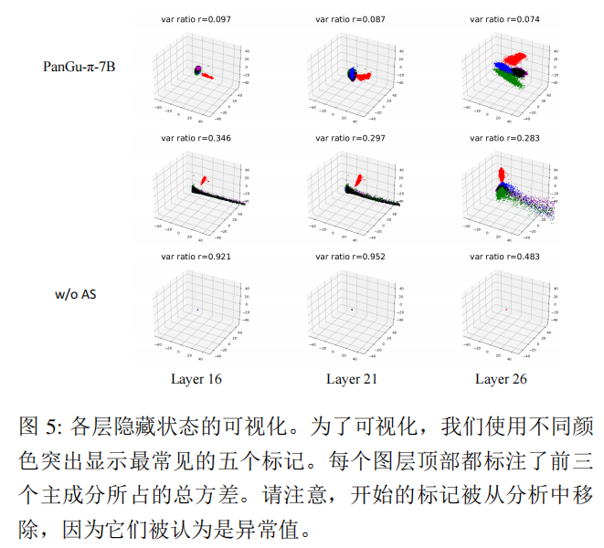
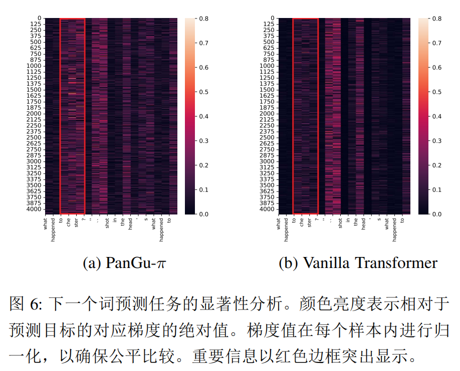
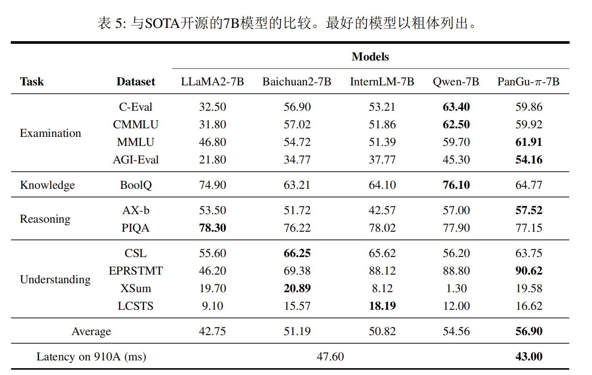
5. 论文贡献（只写作者真正新增的东西）
- 贡献 1：提出面向 LLM 的非线性补偿架构 PanGu-π。
- 贡献 2：从特征坍塌/秩退化角度给出理论分析并映射到结构设计。
- 贡献 3：在通用与金融/法律领域验证性能与效率收益。
判断标准：如果删掉这一点，论文是否还成立？如果“是”，那它可能不是核心贡献。
6. 实验设置
- 数据集：通用预训练语料 + 金融/法律领域数据（YunShan）。
- 模型 / 骨干网络：PanGu-π-1B、PanGu-π-7B。
- 对比方法：LLaMA、Baichuan、Qwen、Skywork 及领域模型（按源笔记）。
- 评价指标：通用评测得分 + 领域基准 + 推理速度。
- 实现设置：尽量保持与基线一致训练策略，聚焦架构影响。
- 关键超参数：模块开关、模型规模、训练配方一致性。
- 是否开源代码 / 模型：待确认。
- 实验是否公平（初步判断）：主张同策略对比，但需更多公开训练细节做严格复核。
7. 主要结果
7.1 主结果
- 结果 1：PanGu-π-7B 在接近基准精度下推理速度约提升 10%（源笔记记录）。
- 结果 2：PanGu-π-1B 在精度与效率上表现突出。
- 结果 3：YunShan 在金融/法律任务上对同规模模型有竞争优势。
7.2 从结果中能读出的结论
- 结论 1：结构补偿可替代部分“盲目扩参”收益。
- 结论 2：MSA 与 FFN 双侧补偿优于单点改动。
- 结论 3：该类改造对领域迁移同样有效（至少在报告场景）。
7.3 最关键的证据
- 最关键表格：通用/领域 benchmark 与速度对比表（见源笔记图片组）。
- 最关键图：特征坍塌与模块设计示意图（见
PanGu-π.assets图组）。 - 最关键数字：约 +10% 推理速度（7B），以及 1B/领域对比优势。
- 为什么它最关键：直接体现方法“有效且可部署”。
7.4 组合与实验图（原始内容迁移）
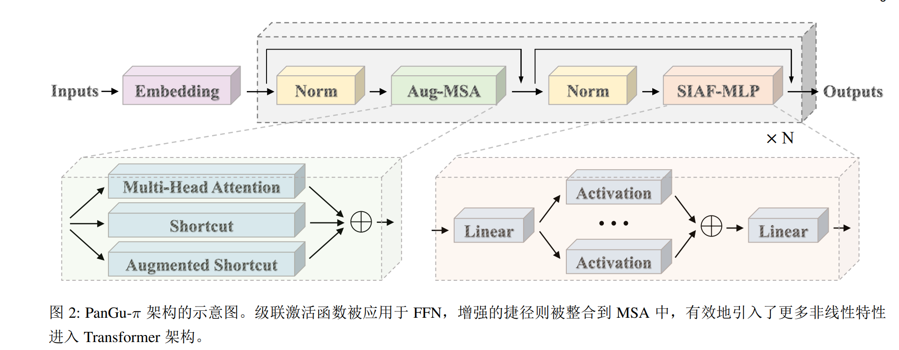
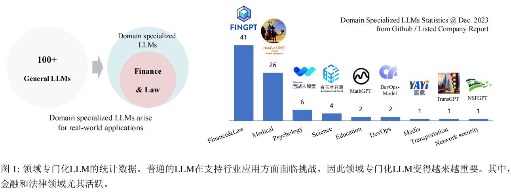
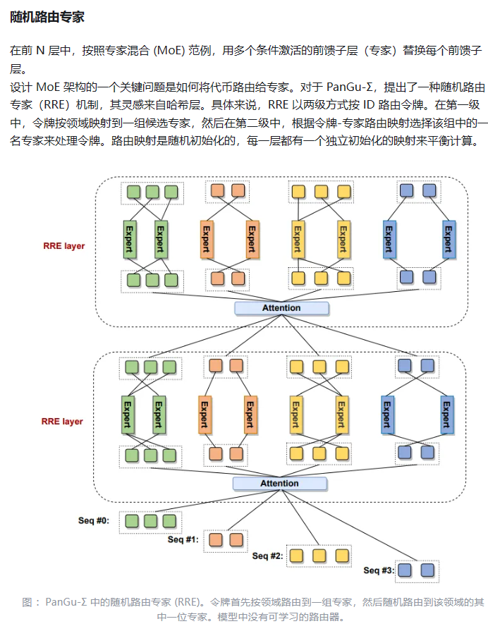
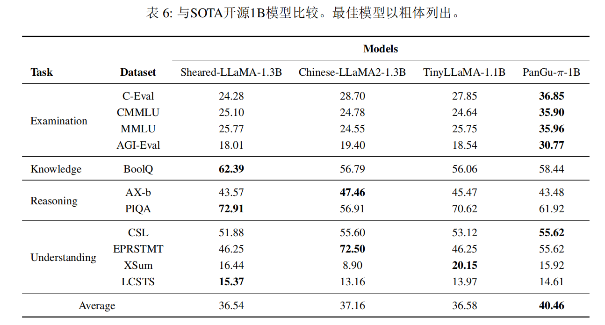
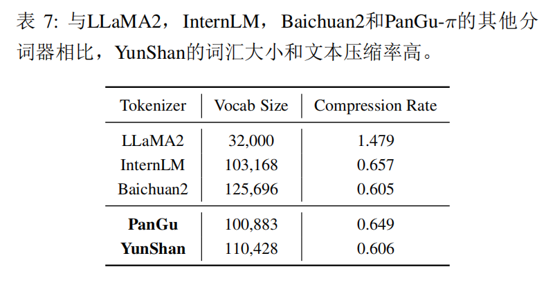
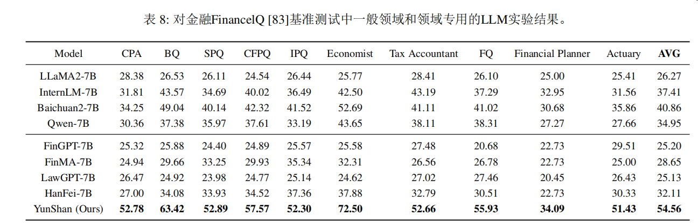
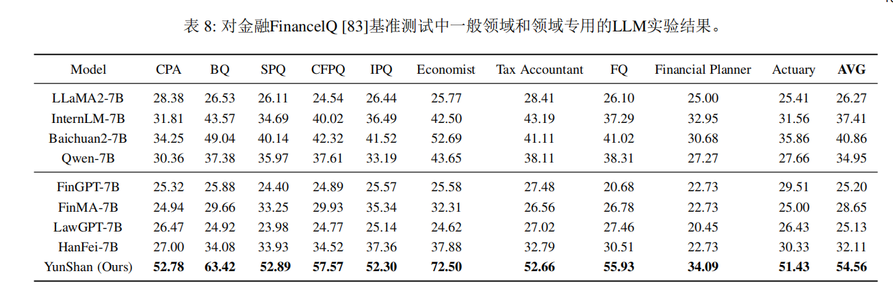
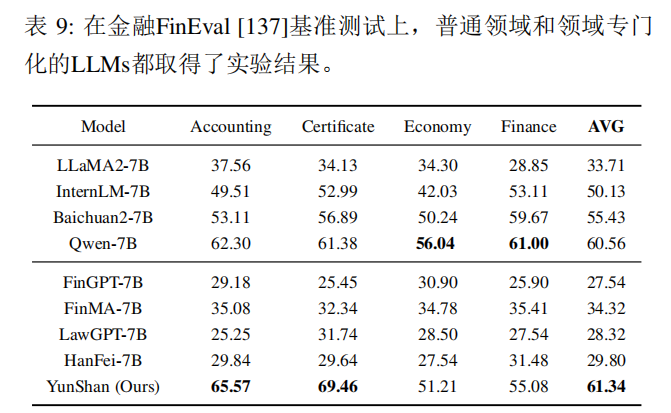
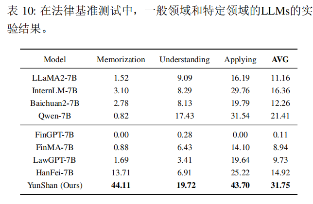
8. 消融实验
- 消融点 1：
- 改了什么：仅保留单一补偿模块（仅捷径或仅激活）。
- 结果如何：整体不如双模块组合稳定。
-
说明了什么：两模块互补是核心。
-
消融点 2：
- 改了什么：去掉增强捷径。
- 结果如何：特征坍塌缓解效果变弱。
-
说明了什么：MSA 侧补偿对保持特征多样性关键。
-
消融点 3：
- 改了什么：去掉级联激活。
- 结果如何：非线性表达与下游表现下降。
- 说明了什么：FFN 侧补偿对表达能力关键。
9. 和已有工作的关系
- 这篇论文最接近哪些方法：SwiGLU 类 FFN 改造、注意力结构改造、领域 LLM 适配。
- 和已有方法相比，最大的不同：同时在 MSA 与 FFN 双通道进行“非线性补偿”。
- 真正的新意在哪里：把特征坍塌理论分析与架构补偿机制明确对齐。
- 哪些地方更像“工程改进”而不是“方法创新”：训练配方与部署侧优化。
- 这篇论文在整个研究脉络里的位置：面向“高性价比架构改造”的实用路线。
10. 我的理解（这一节不能照抄论文）
10.1 直观理解
- 用自己的话解释这篇方法：不给模型盲目加大，而是“补结构短板”。
- 它本质上像在做什么：用少量结构改造提高表示质量密度。
10.2 我认为最关键的设计
- 最关键设计：MSA 增强捷径 + FFN 级联激活的联合。
- 为什么我觉得它最关键：单模块各有收益，但联合才能稳定抑制坍塌并提效。
10.3 我认为最强的一点
- 同时报告了通用与领域场景，不只是单一 benchmark 胜负。
10.4 我认为最可疑的一点
- 跨架构（如 MoE、超长上下文模型）收益曲线尚不明。
11. 局限性
- 局限 1：跨架构泛化证据仍有限。
- 局限 2：增益可能依赖训练细节和数据质量。
- 局限 3：更大模型规模上的边际收益需进一步验证。
可从假设过强、实验覆盖不足、开销过大、泛化不明、复现风险高等角度写。
12. 对我的启发
- 能直接借鉴的部分：双路径结构补偿思路（注意力侧+FFN侧）。
- 不能直接照搬的部分：具体激活/捷径实现需按现有代码栈改写。
- 对我当前课题的启发：优先做“结构增益/开销比”分析，再决定是否扩参。
- 可以尝试的改进方向：与 MoE/长上下文训练结合，做补偿强度自适应。
- 可以作为 baseline / 对比项 / ablation 的部分：仅捷径、仅激活、双模块组合。
13. 待验证问题
- [ ] 问题 1：PanGu-π 与 MoE 或稀疏路由结合后能否保持收益？
- [ ] 问题 2：在工具调用与超长上下文任务中，补偿增益是否持续？
- [ ] 问题 3：是否可给出更强理论上界刻画补偿效果边界？
14. 一句话总结
- PanGu-π 通过“增强捷径 + 级联激活”在低增量成本下提升了 LLM 的非线性表达能力、效率与领域实用性。
15. 快速索引（便于二次回看）
- 核心公式：特征多样性度量
d_M(·)与级联激活相关表达（详见原文）。 - 核心图表：特征坍塌分析图、模块结构图、通用/领域对比图（见下方完整笔记图组）。
- 最值得复看的章节：理论分析（特征坍塌）+ 模块消融 + 领域实验。
- 复现时最需要注意的点：与基线训练策略一致性、模块增量开销核算。
15.1 整合说明 / 索引
- 原始导入中的全部图组已拆分迁移到正文
4.4/4.5/7.4。 - 本节仅保留索引说明，不再堆放原始转录内容。
15.2 导入来源与完整性记录
- 源页面 ID：由本地源笔记迁移（原 Notion 导入字段不完整）
- 原始来源：
papers_sources/Research-Paper-Notes/PanGu-π.md - 对应 PDF：
papers_sources/Research-Paper-Notes/PanGu-π.pdf - 联网校验来源（2026-04-08）：
- arXiv: https://arxiv.org/abs/2312.17276